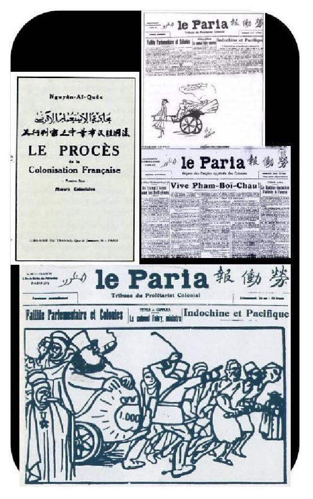
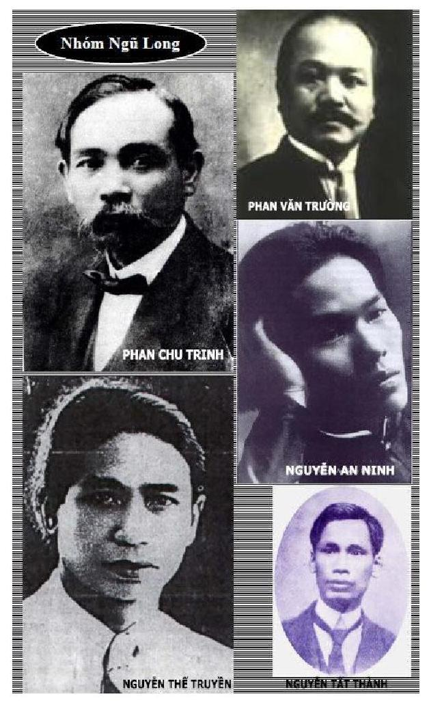

Chương 17

han Văn Trường thành lập hội Đồng Bào Thân Ái
Về sự thành lập Hội Đồng Bào Thân Ái - La Fraternité des Compatriotes, Phan Văn Trường viết: "Một ngày trong năm 1912, sau khi đưa đám một thiếu niên An Nam, học sinh trường Parangon [trường Nguyễn Thế Truyền học từ năm 1910], một số đồng bào đưa ra ý kiến lập Hội Ái Hữu Sinh Viên An Nam tại Pháp - Association amicale des étudiants annamites en France. Họ đề nghị tôi nghiên cứu dự trình để thực hiện càng sớm càng tốt. Tôi trả lời ngay: "Làm thì dễ, Pháp đã có luật 1/7/1901, tự do lập hội. Nhưng luật không chưa đủ, còn phải tính đến chính sách thuộc địa nữa. Các bạn nên biết, nếu ta lập hội mà không có phép, chính quyền thuộc địa sẽ tìm cách dẹp ngay"657.
Tuy nói vậy, nhưng rồi ông cũng làm:
"Tôi bắt tay vào việc. Viết bản Điều lệ và một bài quảng cáo dài. Hội được thành lập trong sự hoan hỉ của đồng bào đã giao phó trách nhiệm cho tôi. Tôi yêu mến đặt tên nó là Thân Ái - La Fraternité. Hội có mục đích:
1/ Giúp sinh viên Đông Dương xa gia đình có cơ hội gặp gỡ, kết bạn, đến chơi và giúp đỡ nhau trong trường hợp rủi ro, bệnh hoạn.
2/ Học chung với nhau để trao đổi kiến thức khoa học và văn chương.
Hội Thân Ái mỗi tháng tổ chức nhiều cuộc hội họp"658. Bản Điều lệ của Hội được Lê Thị Kinh tìm thấy, dịch và đưa vào "Phan Châu Trinh Qua Các Tài Liệu Mới659. Ở dưới có ghi: "Dịch nguyên văn từ quốc ngữ ra tiếng Pháp. Lorin, giáo viên dạy tiếng An Nam Trường Thuộc Địa", nhưng bà không tìm thấy bản quốc ngữ. Điều này dễ hiểu, vì Phan Văn Trường, bản tính thận trọng, viết bản điều lệ bằng tiếng Pháp, nhưng đề tên Lorin dịch, nên không hề có bản tiếng Việt. Lê Thị Kinh tìm thấy một số tư liệu quý về Phan Văn Trường và Hội Đồng Bào Thân Ái, mà có lẽ lúc còn sống chính ông Phan cũng không biết.
Về ngày lập hội, Phan Văn Trường ghi trong hồi ký: "Tôi chưa bao giờ gặp ông (Trinh) ở trong nước. Tôi quen biết ông tại Paris năm 1912"660. Ông Trường nói vì đồng bào thúc đẩy nên ông mới đứng ra lập hội, viết bản điều lệ và đặt tên là Thân Ái nhưng ông không ghi rõ ngày tháng việc này. Albert Sarraut xác định chủ tịch là Phan Văn Trường. Và trong bản Điều lệ, khoản 1, ghi: "Nay thành lập một Hội của người nước Nam có tên gọi Hội "Đồng Bào Thân Ái". Trụ sở của hội tạm thời đặt ở nhà của vị chủ tịch".
Rất may Lê Thị Kinh tìm được mật báo đầu tiên về cuộc họp ở trường Parangon ngày 18/1/1912 về Hội Ái Hữu Đông Dương - Société de Secours Mutuels Indochinoise, trong có câu: "Sau đám tang của Dang [Đang?], ông Trinh và và những người cùng đi đã mời tất cả người Đông Dương đến họp nghe nói chuyện tại Parangon. Đó là một cuộc mời họp đột xuất. Ông Trinh cùng một người tôi không biết rõ tên đã nói trước tiên"661.
Điều này ăn khớp với những gì Phan Văn Trường viết trong hồi ký: Sau đám tang một học sinh Parangon, một số đồng bào đưa ra ý kiến lập hội Ái Hữu Sinh Viên An Nam tại Pháp. Tóm lại, ngày 18/1/1912 là buổi họp đầu tiên tại trường Parangon có Phan Châu Trinh, Phan Văn Trường tham dự662. Buổi họp này, vì chưa có hội, nên chưa có tên, mỗi người đưa ra một tên như: Ái Hữu Sinh Viên, Ái Hữu Đông Dương, Hội Tương Tế... Chỉ sau khi Phan Văn Trường đã viết xong bản điều lệ và đặt tên là Thân Ái-La Fraternité gửi cho Bộ Thuộc Địa, thì mới chính thức có Hội Đồng Bào Thân Ái.
Phan Văn Trường viết: "Hội hoạt động công khai không mờ ám. Chúng tôi cũng biết là có mật thám trà trộn trong đám hội viên, nhưng không sao, càng tỏ cho họ thấy là hội của chúng tôi theo đuổi những mục đích hoàn toàn hợp pháp và đáng khuyến khích. (...) Bọn mờ ám vẫn rình rập, với thế lực trong chính quyền thực dân, thế nào họ cũng phá. Hội của chúng tôi bị tẩy chay, họ phao tin hội này là ổ cách mạng, gián tiếp cảnh cáo hội viên nếu cứ cứng đầu không chịu bỏ thì có ngày sẽ phải hối hận"663.
Bản Lý lịch Phan Văn Trường của sở Mật Thám ngày 19/12/1919 viết: "Năm 1912, y lập Hội Tương Tế lấy tên là Đồng Bào Thân Ái, chỉ gồm toàn người Đông Dương. Hội này chưa bao giờ khai báo với cảnh sát, không có trụ sở và thường hội họp ở các phòng trong của các tiệm cà phê, nhất là tiệm ăn Tầu ở 183 Đại lộ Montparnasse. Hội này hình như đã bị giải tán vào tháng bẩy năm 1913 (?)"664
Hội Đồng Bào Thân Ái là tế bào đầu tiên của người Việt yêu nước tại Pháp. Lúc đó có Bùi Kỷ, đang học trường Thuộc Địa, làm thư ký và Khánh Ký doanh nhân làm thủ quỹ.
Phan Văn Trường và Phan Châu Trinh, trở thành hai nhà lãnh đạo đầu tiên của phong trào Việt kiều yêu nước tại Pháp. Vì hoạt động của hội, mà Phan Văn Trường và Phan Châu Trinh bị bắt năm 1914.
Cùng với việc lập Hội Đồng Bào Thân Ái, trong tháng 4/1912, Phan Văn Trường giúp Phan Châu Trinh viết lại bản điều trần Trung Kỳ dân biến thỉ mạt ký665 sang tiếng Pháp gửi cho Hội Nhân Quyền. Trong hồi ký, ông nhắc đến văn bản này nhiều lần nhưng chỉ nhẹ nhàng nói rằng ông giúp Phan Châu Trinh đưa bản điều trần lên Hội Nhân Quyền.
Về văn bản này, Lê Thị Kinh mới đầu cũng nghĩ là Phan Văn Trrường viết, nhưng sau bà lại dẫn ý kiến Hémery cho rằng đây là một "công trình tập thể", được ông De Pressensé, chủ tịch Hội Nhân Quyền duyệt lại trước khi gửi cho bộ trưởng Thuộc Địa. Chúng tôi không đồng ý với ông Hémery, bởi vì dấu ấn Phan Văn Trường quá rõ, không thể là "tập thể" được, ngoài bút pháp mà Roux và Babut không thể sánh, còn có những điểm sau:
1/ Bỏ hẳn giọng hạ mình đối với chính quyền Pháp của Phan Châu Trinh.
2/ Xưng nước mình là Đế Quốc An Nam, ngôn ngữ tự hào dân tộc, sẽ thấy lại trong bản Thỉnh Nguyện Thư Tám Điểm 1919.
3/ Vô tình xưng mình quê ở huyện Hà Đông - trong khi Phan Châu Trinh quê ở làng Tây Lộc, huyện Tiên Phước, tỉnh Quảng Nam. Phan Văn Trường mới quê ở Hà Đông.
4/ Lối lập ngôn "Xét rằng" cao kỳ của một nhà luật học, phù hợp với ngôn ngữ trong bản tuyên ngôn nhân quyền.
Phan Văn Trường có đủ thẩm quyền hơn nhiều người khác về sự thận trọng, tài lập luận và dùng chữ; chỉ cần đọc những thư hoặc thư ngỏ ông viết cho toàn quyền, bộ trưởng, dân biểu... để bắt bẻ, thì thấy khả năng bút pháp của ông.
Bản điều trần đăng trên Báo của Hội Nhân Quyền và Dân Quyền - Bulletin de la Ligue des droits de l'homme et du citoyen số 20 ngày 31/10/1912. Và được ông chủ tịch hội Nhân Quyền chuyển đến Bộ Thuộc Địa ngày 25/9/1912. Đầu năm 1913, Albert Sarraut phải nhượng bộ, hứa thả dần tù nhân vụ Trung Kỳ dân biến.
Toàn quyền Albert Sarraut gửi lá thư thứ nhất cho bộ trưởng Thuộc Địa về Hội Đồng Bào Thân Ái ngày 24/4/1912. Lá thư mở đầu bằng câu: "Theo điện số 1152 (V.P. Bộ Trưởng) Ngài đã chuyển cho tôi bản điều lệ của Hội Đồng Bào Thân Ái do những người An Nam ở Pháp thành lập. Chủ tịch là Phan Văn Trường, phụ giảng ở trường Ngôn Ngữ Đông Phương". Và kết thúc bằng câu: "Cần đề phòng ảnh hưởng của Phan Văn Trường, người có kiến thức rất uyên bác nhưng tự phụ, hay sinh sự và muốn có uy tín trong đồng bào mình ở Pháp và ở Đông Dương. Đồng Bào Thân Ái sẽ thành một Câu Lạc Bộ để trao đổi những cảm tưởng và ý nghĩ bất lợi cho sự thống trị của chúng ta, sẽ thảo luận các vấn đề chính trị nhiều hơn là những lợi ích vật chất và tinh thần của Hội. Tôi nghĩ cần phải theo dõi kỹ hành động của Hội này và mong ngài sẽ có những chỉ thị cần thiết cho việc đó"666.
Toàn quyền Albert Sarraut viết lá thư thứ hai cho bộ trưởng Thuộc Địa ngày 5/7/1912, tỏ rõ ý lo ngại hơn về Hội Đồng Bào Thân Ái, Sarraut nhấn mạnh: "Tôi đã yêu cầu ngài hạ lệnh theo dõi hoạt động của các thành viên, đặc biệt là Phan Văn Trường, chủ tịch Hội"667.
Và lần này có kết quả: Để trừng trị, Bộ Thuộc Địa ra lệnh cho hiệu trưởng trường Sinh Ngữ Đông Phương phải sa thải Phan Văn Trường.
Nhưng sự trừng phạt không dừng ở đó. Albert Sarraut lo ngại hai ông Phan dùng hội Đồng Bào Thân Ái để liên lạc với các tổ chức chống Pháp ở trong nước, đặc biệt Phan Châu Trinh liên lạc với Lương Văn Can và Phan Văn Trường với 5 anh em ông668, một gia đình nổi tiếng nhiều nhân tài ở đất Bắc, khiến Nguyễn Văn Vĩnh viết: "Nếu nước An Nam chúng ta có độ mươi gia đình như gia đình này, thì chúng ta sẽ có đủ nhân tài để bố trí làm tất cả những công việc cần thiết"669.
Lợi dụng việc Quang Phục Hội của Phan Bội Châu ném bom giết chết hai sĩ quan Pháp tại một quán cà phê ở Hà Nội tháng 4/1913, mật thám bắt người anh cả của ông Trường là Phan Tuấn Phong và con trai 13 tuổi là Phan Trắc Cư. Khám nhà em ông là Phan Trọng Kiên, tìm được thư của ông Trường, trong có câu: "Mong nước mình rồi sẽ có ngày 14/7", tức là ngày cách mạng Pháp phá ngục Bastille năm 1789. Hai anh em bị kết án chung thân biệt xứ vì "tội đã giết quan tư670 Chapuis và Montgrand", tại Hà Nội671. Cha con ông Phong và ông Kiên bị đầy sang Nouvelle-Calédonie.
Ngày 13/3/1914, Phan Văn Trường được mời diễn thuyết tại trường Cao Đẳng Xã Hội, Albert Sarraut lại can thiệp với Bộ Thuộc Địa, không cho Phan Văn Trường nói, nhưng không thành - các trường lớn và các đại học rất ghét sự can thiệp của chính quyền. Phan Văn Trường diễn thuyết về đề tài: Les revendications indigènes - Những thỉnh nguyện của người bản xứ. Lần đầu tiên ông chính thức dùng chữ Les revendications - thỉnh nguyện, đòi hỏi, về sau chữ này sẽ trở lại với Bản Thỉnh Nguyện Tám Điểm, năm 1919.
Tiếp theo đó là vụ bắt Phan Châu Trinh và Phan Văn Trường, tù từ tháng 9/1914 đến tháng 7/1915. Theo một mật báo thì Hội Đồng Bào Thân Ái phải giải tán năm 1916672.
Nhóm Người An Nam Yêu Nước ra đời.
● André Salles, con bài của Bộ Thuộc Địa để trừ khử Phan Văn Trường và Hội Đồng Bào Thân Ái
André Salles, thanh tra thuộc địa về hưu, mạnh cánh trong Bộ Thuộc Địa, là Bí thư - Secrétaire- của Ủy Ban Paul Bert trực thuộc Alliances Françaises- Liên Minh Pháp Ngữ, cơ quan truyền bá tiếng Pháp ở nước ngoài. Uỷ Ban Paul Bert có nhiệm vụ kiểm soát du học sinh đến từ thuộc địa. Học sinh đến Pháp được Salles đưa vào trường Parangon, một trường tiểu học tư ở Joinville le Pont, ngoại ô Paris, do Salles đỡ đầu, để dễ kiểm soát. Salles cực lực chống việc cho Phan Châu Dật vào trường Parangon, mặc dù lúc đầu y cũng tỏ vẻ "nâng đỡ" Phan Châu Trinh. Học sinh nào tỏ dấu hiệu khó bảo thì cha mẹ sẽ bị trừng trị. Ngay từ lúc mới sang, Phan Văn Trường đã được Salles mời đến gặp, chủ ý muốn "thu phục", nhưng thái độ của Phan Văn Trường lơ là, Salles đem lòng thù oán. Y tiếp tục theo dõi, coi hai ông Phan là phần tử xấu, ảnh hưởng đến học sinh, reo rắc mầm mống nổi loạn.
Trong một bản mật báo gửi Arnoux, một trong những xếp mật thám ở bộ Thuộc Địa, Salles viết: "Nghỉ hè năm 1910, khi gặp tại Ngân khố một trong các trẻ thơ đỡ đầu của chúng tôi mới 17 tuổi, đến nay vẫn chưa tốt nghiệp trung học, y (tức Phan Văn Trường) đã nói: "Chúng ta là những nô lệ, vì vậy tôi sẽ xin nhập quốc tịch Pháp". Sau đó, y đưa cho nó một danh mục sách bảo nên mua đọc:
- Dân ước của Rousseau.
- Thực chất luật pháp (tức Vạn pháp tinh lý) của Montesquieu.
- Thử bàn về sử (Khảo luận sử học) của Chateaubriand (...) hành động của Trường đúng là chứng tỏ cách làm của lãnh đạo Hội Đồng Bào. (...) "Học vấn cao và đúng hướng sẽ nẩy sinh tư tưởng cách mạng", đó là chủ trương của Hội Đồng Bào. (...) Hội Đồng Bào năm 1912 có vẻ muốn nối tiếp truyền thống của Hội Đồng Bào năm 1908 ở Trung Kỳ (...) Chủ trương mới này mang tính lâu dài hơn nhưng còn khôn khéo hơn nhiều, có thể tóm tắt như sau: "Nấp dưới luật pháp của Pháp để chống chính sách của Pháp ở Đông Dương"673.
Được hỏi về việc này, Phan Văn Trường trả lời vắn tắt: Tưởng cứ đọc Dân Ước thì làm cách mạng được à, sao dễ thế! Nhưng những việc Salles tố giác không "oan": Nguyễn Thế Truyền là một trường hợp điển hình, có thể coi là môn đệ của Phan. Phan Văn Trường lại tỏ thái độ rất coi thường Salles, khiến y càng tức tối, tìm hết cách để triệt hạ ông và Hội Đồng Bào Thân Ái. André Salles là đầu mối các việc: Phan Văn Trường mất chức giảng dạy ở trường Sinh Ngữ, thay bằng Cao Đắc Minh, tay chân của Salles. Anh, em ông Trường ở Hà Nội bị bắt và bị đi đầy. Phan Châu Trinh và Phan Văn Trường bị bắt.
Đến tháng 2/1916, André Salles viết đơn yêu cầu mở lại vụ án, đòi đuổi Phan Văn Trường khỏi Công Binh Xưởng Toulouse. Nhưng sau lá thư trả lời dứt khoát của Bộ Quốc Phòng ngày 13/3/1916, từ chối việc thuyên chuyển ông Trường, André Salles bị mất chức bí thư Uỷ Ban Paul Bert, thay thế bằng Lorin là người đã ký tên dịch bản điều lệ Hội Đồng Bào Thân Ái của Phan Văn Trường.
● Nhóm An Nam Yêu Nước
Sự xuất hiện bút hiệu Nguyễn Ái Quấc.
Nếu Hội Đồng Bào Thân Ái ra đời một cách chính thức, có điều lệ nội quy gửi lên Bộ Thuộc Địa để xin phép, thì Nhóm An Nam Yêu Nước là một tổ chức không chính thức, không là Hội - Association mà chỉ là Nhóm- Groupe.
Hémery cho rằng: "Nhóm nhỏ Người An Nam Yêu Nước do Trinh và Trường lập năm 1918. Một thứ "cộng đồng" nhiều nhất độ 15 người ở nhà Phan Văn Trường số 6 Villa des Gobelins"674. Câu này có chỗ sai: Năm 1918, Phan Văn Trường đang ở Toulouse, chưa ở nhà số 6 Villa des Gobelins. Nhưng rất có thể nhóm này đã hình thành từ khi Phan Văn Trường và Nguyễn Thế Truyền ở Toulouse.
Phan Văn Trường để ý đến Nguyễn Thế Truyền từ khi Truyền còn là học sinh trường Parangon. Hai người về sau lại cùng sống ở Toulouse từ 1916 đến 1919: Phan Văn Trường, tại ngũ, làm thông ngôn cho lính thợ và Nguyễn Thế Truyền, Nguyễn Thế Song (em), Nguyễn Thế Phu (chú), Nguyễn Thế Tắc (em họ), đều là sinh viên ở Toulouse từ 1916 trở đi, và đều trở thành những nhà cách mạng trong nhóm Nguyễn Thế Truyền.
Hémery nói đến năm 1918, vì 1918 tên Nguyễn Ái Quốc/Quấc xuất hiện trên báo, nhưng chắc nhóm An Nam Yêu Nước đã hoạt động tại Toulouse từ 1916.
Sau khi Phan Văn Trường ra tù, được gửi về Công Binh Xưởng Toulouse, André Salles vẫn ngấm ngầm vận động mở lại vụ án, đòi chuyển Phan Văn Trường khỏi Toulouse, nhưng giám đốc Công Binh Xưởng trả lời: Phan Văn Trường có thái độ đúng đắn, không hề có triệu chứng gì đáng nghi ngờ. Salles bèn viết tiếp lá thư thứ nhì, vẫn nhân danh bộ trưởng Thuộc Địa, lần này y nhấn mạnh: "Về thái độ đúng của Phan Văn Trường ở Toulouse: Do y biết đang bị theo dõi nên hết sức giữ gìn. Y sẽ làm việc một cách kín đáo giấu giếm như y đã làm trong Hội Đồng Bào với các sinh viên An Nam, ngoài sự kiểm soát của người quản lý các sinh viên đó. Và y có nhiều thuận lợi: y ở ngoài phố và thợ người Nam từ 19 đến 21 giờ và chiều ngày chủ nhật được tự do. Như vậy tha hồ trò chuyện không bị kiểm soát. Đó là những hoạt động ngầm rất khó phát hiện (...) Bộ trưởng Thuộc Địa rất ngại Phan Văn Trường sẽ thực hiện với thợ thuyền người An Nam ở Toulouse những điều y đã làm với sinh viên Đông Dương và chuẩn bị cho họ phản kháng lại kỷ luật của các nhà cầm quyền Pháp (...) Vì vậy nên đưa tên lính Phan Văn Trường ra khỏi Toulouse và cho y đến một nơi không có có nhóm thợ An Nam nào làm việc."675.
Lần này bộ trưởng Quốc Phòng gửi thư đáp lại bộ trưởng Thuộc Địa, bác bỏ hẳn đề nghị đổi Phan Văn Trường đi chỗ khác vì đang cần một thông dịch viên giỏi ở Toulouse676. Thu Trang trích một mật báo, năm 1919, không ghi ngày, như sau:
"Hội những người An Nam yêu nước đã được thành lập từ nhiều năm nay do hai nhà cách mạng chống Pháp là Phan Văn Trường và Phan Châu Trinh. Đó là một nhóm hoạt động rất tích cực.
Trong suốt thời kỳ chiến tranh (1914-1918), trụ sở Hội này là nơi hẹn của rất nhiều binh lính An Nam và hạ sĩ quan cùng sĩ quan có cấp bực. Từ hồi hai người trên, Phan Văn Trường và Phan Châu Trinh, bị bắt vì tội chống an ninh quốc gia vào năm 1915, tuy Phan Văn Trường và Phan Châu Trinh vẫn giữ vai trò lãnh đạo Hội một cách không chính thức, nhưng thực tế thì đã chính là do Nguyễn Ái Quốc"677.
Điểm đáng chú ý đầu tiên là câu: "Trong suốt thời kỳ chiến tranh (1914-1918), trụ sở Hội này là nơi hẹn của rất nhiều binh lính An Nam và hạ sĩ quan cùng sĩ quan có cấp bực", Câu này chỉ có thể là thời kỳ Phan Văn Trường ở Toulouse, vì chỉ ở Toulouse mới có Công Binh Xưởng, hội tụ nhiều binh lính An Nam. Vậy mật báo này xác nhận việc Phan Văn Trường đã quy tụ nhóm An Nam Yêu Nước ở Toulouse. Lo lắng của Salles không phải là vô bằng cớ.
Điểm thứ nhì đáng chú ý là câu: "tuy Phan Văn Trường và Phan Châu Trinh vẫn giữ vai trò lãnh đạo Hội một cách không chính thức, nhưng thực tế thì đã chính là do Nguyễn Ái Quốc", câu này trong mạch văn, có thể có các ý nghiã:
1/ Cái tên Nguyễn Ái Quốc/Quấc đã xuất hiện trong khoảng 1914-1918, ít nhất là từ 1918. Tức là trước khi Nguyễn Tất Thành sang Paris rất lâu - Tất Thành sang Paris tháng 6/1919, như đã nói ở trên.
2/ Nhóm Người An Nam Yêu Nước đã hình thành trong khoảng 1914-1918. Như vậy, chỉ có thể ở Toulouse, nơi Phan Văn Trường và Nguyễn Thế Truyền, em và chú, cùng học từ 1916. Trong thời gian này Phan Văn Trường bị buộc tội xúi giục binh lính An Nam làm loạn viết đơn xin giải ngũ. Nhóm Nguyễn Thế Truyền có lẽ còn là sinh viên nên chưa bị để ý - Sẽ nói đến sau.
3/ Nguyễn An Ninh được ba người bạn thân Lê Văn Thử, tác giả Hội kín Nguyễn An Ninh678, Phương Lan Bùi Thế Mỹ, tác giả Nhà cách mạng Nguyễn An Ninh 1899- 1943679 và Hồ Hữu Tường, tác giả 41 năm làm báo680 đều ghi nhận Nguyễn An Ninh sang Pháp lần đầu năm 1918.
Vậy cái tên Nguyễn Ái Quấc - Quấc chứ không phải Quốc - nếu có từ năm 1918, phải là dấu ấn của Nguyễn An Ninh. Ninh là người Nam, chỉ có người Nam, theo Huỳnh Tịnh Của, mới viết Quấc. Phan Văn Trường và Nguyễn Thế Truyền người Bắc, không viết như thế. Quấc và Quốc cùng được sử dụng trong một thời gian, sau Nguyễn Thế Truyền chỉ dùng tên Quốc.
4/ Bộ Thuộc Địa bắt đầu theo dõi Nguyễn Ái Quốc vào khoảng tháng 10/1919. Báo cáo của Jean681 tháng 10/1919, có đoạn như sau:
"1- Ông Guesde nói phải, có Nguyễn Ái Quốc tên thật là Nguyễn Văn Quốc, người Sàigòn, học ở bên này đã lâu lắm. Song chưa biết tên ấy ở đâu - Phải quen Phan Văn Chường thời mới biết tên ấy được.
2- Xin ông làm ơn hỏi Sureté682 Paris xem Chường có ở Paris bây giờ không, hay là đi voyage như lời sergent interp683 Khương nói và cho tôi chỗ hắn ở (số nhà và phố)"684.
Theo báo cáo này, Jean đến tháng 10/1919, vẫn chưa xác định được nhân dạng Nguyễn Ái Quốc, lúc thì coi Nguyễn Ái Quốc là Nguyễn An Ninh - người Sàigòn, lúc thì coi Nguyễn Ái Quốc là Nguyễn Thế Truyền - học ở bên này đã lâu lắm, và chưa biết địa chỉ của Hội người An Nam yêu nước là nhà Phan Văn Trường, số 6 villa des Gobelins.
Những báo cáo của mật thám và chỉ điểm, trong hai năm 1919-1920 về Nguyễn Ái Quốc của Jean, của Edouard (cũng có tên là Đốc Phủ Bẩy) và của tổng thanh tra Pierre Guesde685, trong thời gian này đều có tính rối mù như thế, nghiã là như một nhân vật có đầy đủ khả năng biện luận, diễn thuyết, biết rõ tình hình Việt Nam và thế giới, đang viết và dịch sách Tây... tóm lại là khả năng của nhiều người họp lại.
5/ Về hoạt động của nhóm An Nam Yêu Nước, Daniel Hémery viết: "Từ mùa thu năm 1919, Nhóm Những Người Yêu Nước có cột viết trên các báo Le Popupaire (Người bình dân), L'Humanité (Nhân loại), Le Libertaire (Người tự do tuyệt đối), báo của CGT (một công đoàn), La vie ouvrière (Đời sống thợ thuyền) và Le Peuple (Dân chúng). Họ diễn thuyết, tổ chức những buổi họp mặt công cộng, với chủ đích bảo vệ quyền lợi Đông Dương trong nền văn chương chống thực dân theo cách của những nhà văn Indonésia (Nam Dương) hay Ấn Độ. Cuối năm 1919, Nguyễn Ái Quốc, theo lời khuyên của Paul Vigné d'Octon là người hết sức chống chế độ thuộc địa, làm việc ráo riết tại thư viện Quốc gia, sửa soạn ra cuốn sách Les Opprimés (Những kẻ bị đàn áp), có thể là sơ thảo văn bản tương lai Procès de la Colonisation (Bản Án Chế Độ Thực Dân) và nghiền ngẫm dự định dịch các tác phẩm tây phương, như L'Esprit des lois (Vạn pháp tinh lý) sang Quốc ngữ"686.
Câu này xác định hoạt động của nhóm Ngũ Long trên báo chí và diễn thuyết. Nhưng vì dùng tài liệu sai của mật thám, nên Hémery đã nhầm Nguyễn An Ninh với Nguyễn Ái Quốc/Nguyễn Tất Thành.
Trong các bài viết hoặc diễn thuyết của mình, Nguyễn An Ninh thường nhắc đến kinh nghiệm cần học hỏi của Ấn Độ, Nam Dương. Nguyễn An Ninh thời ấy là một thanh niên để tóc dài kiểu hippie, làm "người mẫu" để kiếm tiền học, chơi thân với Paul Vigné d'Octon và nhóm anarchiste - vô chính phủ, cộng tác với báo Le Libertaire của nhóm này. Mỗi cuối tuần, Ninh ra ngoại ô Paris, vào rừng tập nói, để diễn thuyết cho hùng hồn. Đó là Nguyễn An Ninh những năm 1918-1922 ở Pháp. Theo Phạm Quỳnh687, thập niên 1920 ở Pháp, diễn thuyết là một cái mốt, hầu như cuộc hội họp nào cũng có diễn thuyết. Nguyễn An Ninh còn viết cuốn La France en Indochine - Nước Pháp ở Đông Dương, chống Pháp mãnh liệt, in năm 1924, mang về Việt Nam trong chuyến đi với Phan Châu Trinh, sách này đã bị tịch thu688. Ninh dịch Contrat social - Dân ước của Rousseau và có ý dịch cả L'Esprit des lois - Vạn pháp tinh lý của Montesquieu.
Vậy hình ảnh một thanh niên tên Nguyễn, chơi thân với nhóm anarchiste, diễn thuyết hùng hồn, viết hết sách này đến sách khác, vào cuối 1919 đầu 1920, mà mật thám Jean mô tả và Hémery ghi lại trên đây, chỉ có thể là Nguyễn An Ninh, vì Nguyễn Tất Thành, đến tháng 6/1919, mới sang Pháp, đang học tiếng Pháp, làm sao cuối năm 1919, đã có thể "đăng đàn diễn thuyết", viết sách, và dịch Montesquieu được?
6/ Một mật báo khác viết: "Vào những năm 1920-1921, Hội những người An Nam yêu nước" đặt trụ sở tại số 6 villa des Gobelins. Số người lãnh đạo của Hội này, đã từng làm công việc tuyên truyền chống Pháp một cách rất mạnh nói chung, và đặc biệt chống ông Sarraut (toàn quyền Đông Dương) nói riêng. Những người này cho là ông ta đã gây nên nhiều nỗi đau khổ tại nước họ.
Tháng 10 năm 1921, Phan Văn Trường, Nguyễn Ái Quốc, Khánh Ký, Lê Văn Thuyết và Hai Tân đã quyết định đề nghị ám sát ông Sarraut (...) Nhưng nhờ sự can thiệp của Phan Châu Trinh mà dự án này không đem ra thi hành"689.
Những thông tin trong đoạn đầu, khá đúng, duy việc Phan Văn Trường định "ám sát" Sarraut là sai. Phan Văn Trường là người thận trọng, ghét bạo lực, hành động công khai, ông đối lập với Sarraut bằng luật pháp và ngòi bút. Nguyễn Thế Truyền sôi nổi và nóng nẩy hơn khi viết những bài đả kích Sarraut.

● Hội Liên Hiệp Thuộc Địa và báo Le Paria
Hội Liên Hiệp Thuộc Địa - Union Intercoloniale là cơ sở quan trọng thứ nhì, đối với người Việt tại Pháp, sau nhóm An Nam Yêu nước. Hội quy tụ đại diện những nước nhược tiểu bị Pháp đô hộ, họp lại để cùng chống thực dân. Hội ra tờ báo Le Paria - Người cùng khổ.
Trần Dân Tiên khoe vai trò của mình trong tờ báo này:
"Để mở rộng việc tuyên truyền đến các thuộc địa, ông Nguyễn và các đồng chí của ông ra tờ báo Người cùng khổ (Le paria) do ông là chủ bút kiêm chủ nhiệm (...) Ông Nguyễn kiêm cả viết, chủ nhiệm, chủ bút, chữa bài, thủ quỹ, xuất bản và liên lạc"690.
Hồng Hà cũng viết: "Báo Người cùng khổ, cơ quan ngôn luận của vô sản thuộc địa do anh Nguyễn Ái Quốc sáng lập, làm chủ bút kiêm chủ nhiệm, phát hành trong những năm từ 1922 đến 1924 (...) Anh Nguyễn viết khỏe nhất và nhiều nhất, có số anh viết tới ba, bốn bài. Chính từ đây và từ năm 1922 này, người đọc được thấy những bài báo đầy tính chiến đấu mãnh liệt của anh Nguyễn"691.
Sự thực không như thế.
Hội Liên Hiệp Thuộc Địa được sáng lập tháng 7/1921, tại Paris. Mỗi thuộc địa có một đại diện trong ban chấp hành. Trụ sở số 9 rue Vallette, sau dời đến số 3 rue Marché des Patriarches. Tờ báo của hội là tờ Le Paria ra hàng tháng, dưới sự bảo trợ của nhà văn Henri Barbusse. Báo viết tiếng Pháp, tên in ba thứ chữ: Pháp, Hán và Ả Rập, tồn tại 4 năm, ra được 38 số: số 1, ngày 1/4/1922 và số 38, ngày 1/4/1926.
Thành phần của Hội khi mới thành lập gồm có: Marie Bloncourt, luật sư, đại diện Dahomey, Phi Châu, tổng thư ký, Nguyễn Ái Quốc, đại diện Đông Dương, Jean Baptiste, đại diện Guadeloupe; v.v... Lúc đầu có khoảng 200 hội viên. Phan Văn Trường, Nguyễn Thế Truyền và Nguyễn An Ninh đều là hội viên từ 1922, cả ba đều đã diễn thuyết nhiều lần tại trụ sở của Hội hoặc ở Hội trường Hội Bác Học - Salle des Sociétés savantes, rue Danton. Ví dụ, ngày 18/2/1923, Phan Văn Trường diễn thuyết so sánh sự cai trị Việt Nam của Pháp và của Trung Hoa. Nguyễn An Ninh diễn thuyết nhiều lần tại Hội trường hội Bác Học. Ngày 17/10/1924 Nguyễn Thế Truyền diễn thuyết về Đông Dương dưới sự cai trị của Albert Sarraut và Martial Merlin. Mỗi lần Phan Văn Trường, Nguyễn Thế Truyền, Nguyễn An Ninh diễn thuyết, Phan Châu Trinh đều đến nghe692.
Chỉ cần lướt qua tờ Le Paria cũng thấy: đây là tờ báo chống thực dân một cách trào phúng và thâm thúy, kiểu "gậy ông đập lưng ông"; phải đủ những điều kiện: có óc châm biếm, có uy-mua Pháp, thâm hiểu văn hoá Pháp mới viết được. Nguyễn Ái Quốc làm đại diện cho Đông Dương trên tờ báo này là đúng, vì bút hiệu Nguyễn Ái Quốc năm 1922, đã rất nổi tiếng. Nhưng những bài ký tên Nguyễn Ái Quốc có phải do Nguyễn Tất Thành viết không?
Trong một bài bênh vực Nguyễn Ái Quốc, Nguyễn Thế Truyền ngụ ý: tiếng nói của Nguyễn Ái Quốc là tiếng nói của toàn dân Việt Nam, vậy ông đã kín đáo thổ lộ sự thật về cái bút hiệu chung này. Báo Le Paria số 4, tháng 7/1920, có 2 bài ký tên Nguyễn Ái Quốc, tựa đề La haine des races- Sự căm thù chủng tộc và Les cilivisateurs - Những kẻ giáo hoá. Bài L'Humanité coloniale - Nhân nghiã thực dân trong số 6 ra tháng 7/1920, có kèm ảnh những người bị xử bắn, và trong bài báo tác giả mỉa mai ghi: đó là hành động của những con người văn minh693.
Bài đầu tiên ký tên Nguyễn Thế Truyền xuất hiện trên Le Paria, số 9 ra ngày 1/12/1922, tựa đề Un bolchevick jaune- Một người Bôn-sơ-vích da vàng, nội dung bênh vực Nguyễn Ái Quốc bị báo La Dépêche Coloniale - Bản tin thuộc địa đả kích, trong bài này, Nguyễn Thế Truyền ngụ ý: Tiếng nói của Nguyễn Ái Quốc là tiếng nói của toàn dân Việt Nam, như đã nói ở trên.
Sau khi Nguyễn Tất Thành đi Nga, tên Nguyễn Thế Truyền xuất hiện nhiều hơn và tên Nguyễn Ái Quốc giảm dần, nhưng vẫn tồn tại đến 1927, chứng tỏ Nguyễn Thế Truyền tuy đã viết bằng tên thật nhưng vẫn còn tiếp tục dùng tên Nguyễn Ái Quốc trong 4 năm nữa694.
Số 21 ra ngày 1/12/1923, trong bài Le vase de Chine - Chiếc bình sứ Trung Hoa, Nguyễn Thế Truyền đả kích kịch liệt bác sĩ Cognacq, nguyên giám đốc học chính Đông Dương về tội hối lộ. Số 22, Nguyễn Thế Truyền nhắc đến lòng yêu nước của Phan Tuấn Phong và Phan Trọng Kiên, anh em ruột của Phan Văn Trường trong phong trào Đông Du, bị bắt năm 1913. Số 24, đả kích toàn quyền Albert Sarraut đầu độc dân tộc Việt Nam bằng rượu và thuốc phiện. Số 27, viết về Phạm Hồng Thái và tiếng bom Sa Diện. Số 28, đả kích Outrey, dân biểu Nam Kỳ, tuyên bố trong quốc hội Pháp không nên áp dụng luật ân xá tại Việt Nam, vì người Việt Nam không biết ân xá là gì. Nguyễn Thế Truyền chê Outrey dốt nát không biết gì vì chín trăm năm trước vua Lý Thánh Tông đã ân xá cho phạm nhân, trong một năm trời làm rét mướt695.
Từ ngày 4/11/1923, Nguyễn Thế Truyền thay thế Nguyễn Ái Quốc làm trị sự toà báo. Đầu 1925, Nguyễn Thế Truyền trở thành phó tổng thư ký của Hội và chủ bút tờ Le Paria. Trong năm 1925, hầu như số nào cũng có bài của Nguyễn Thế Truyền. Sau số kép 36-37 ra tháng 10/1925, toàn bộ viết bài bênh vực Phan Bội Châu, Nguyễn Thế Truyền ra khỏi Le Paria để sửa soạn ra tờ Việt Nam Hồn, tiếng Việt. Không có Nguyễn Thế Truyền, Le Paria chỉ ra được một số chót - số 38, tháng 4/1926- rồi đình bản696.
● Ai là tác giả những bái báo ký tên Nguyễn Ái Quốc?
Nhờ cuốn sách của Đặng Hữu Thụ, mà chúng ta biết rõ hoạt động của Nguyễn Thế Truyền và nhóm của ông tại Pháp trong đó có em trai là Nguyễn Thế Song, chú ruột là Nguyễn Thế Phu và các anh em họ và người làng, đều đi du học Pháp từ 1916 và làm cách mệnh.
Trong thư ngày 27/3/23, cụ thân sinh Nguyễn Thế Truyền khuyên con: "chớ bắt chước Nguyễn Ái Quốc làm báo nói lăng nhăng, chớ chơi với Nguyễn Ái Quốc"697.
Như thế, cái tên Nguyễn Ái Quốc, tuy là tên chung, tên ma, nhưng đã thành tên riêng của một người: Nguyễn Tất Thành, và sự bí mật về cái tên Nguyễn Ái Quốc gần như toàn diện, đến cả cụ thân sinh Nguyễn Thế Truyền cũng không biết con mình viết bài ký tên Nguyễn Ái Quốc! Sự bí mật này trở thành chiến lược của nhóm Ngũ Long, chúng tôi sẽ trở lại trong phần phân tích văn bản Nguyễn Ái Quốc.
Trần Dân Tiên/Hồ Chí Minh hiển nhiên nhận mình là Nguyễn Ái Quốc, tác giả các bài báo.
Nhưng nhiều dữ kiện chứng minh ngược lại:
1/ Khả năng tiếng Pháp: Một người đến Pháp năm 1919, mới bắt đầu học viết báo tiếng Pháp, một thời gian sau không thể viết được những bài xã luận ký tên Nguyễn Ái Quốc, kể cả khi người ấy ở Pháp nhiều năm. Viết được như vậy phải học trường Pháp từ nhỏ và có văn tài.
2/ Chính quyền Pháp cũng không tin Nguyễn Tất Thành là Nguyễn Ái Quốc: Trong thư gửi toàn quyền Đông Dương ngày 12/9/1923, sau khi Nguyễn Tất Thành đi Nga, tổng thanh tra Pierre Guesde còn viết: "Những bài ký tên Nguyễn Ái Quốc không phải do y viết hoặc đã được sửa chữa rất nhiều. Khả năng nói và viết tiếng Pháp của tay An Nam này không đủ để viết những bài y ký tên".
Nguyên văn: "Les articles publiés sous le nom de Nguyễn Ái Quốc ne sont pas de lui ou ont été tout au moins l'objet des plus sérieures retouches. Cet annamite parle et écrit insuffisament le français pour rédiger tout ce qui paraît sous son nom"698.
Một thư khác, Pierre Guesde gửi toàn quyền Đông Dương ngày 6/7, nhưng không đề năm, chắc vào khoảng 1920-1921, có đoạn như sau: "Tôi được thông báo là Phan Văn Trường sẽ từ Mayence về Paris những ngày sắp tới. Tôi đã dặn Cảnh Sát Cuộc phái người theo dõi trong thời gian y ở lại thủ đô. Ông Babut có đến thăm tôi và nói rằng tất cả những bài báo ký tên Nguyễn Ái Quốc đều do Phan Văn Trường gợi hứng. Babut xác định với tôi rằng Phan Văn Trường là linh hồn của tất cả những gì xẩy ra trong môi trường Villa des Gobelins"699.
Theo báo cáo này thì Ernest Babut không hẳn đã có lòng tốt với Phan Châu Trinh mà Babut còn "làm việc" với chính phủ Pháp nữa.
Nhiều chứng cớ cho thấy Babut và Roux, hai ân nhân của Phan Châu Trinh, còn hành động dưới quyền điều khiền của Pierre Guesde và Albert Sarraut.
Báo cáo 20/1/1921 của Josselme, trưởng Cơ Quan Kiểm Soát ở Marseille gửi Guesde về lời khai của François Albert, một luật sư gốc Việt - Miên đã ở trong nhóm Phan Văn Trường: "Ngày 17/1/1921, theo ý kiến của François Albert thì có khả năng nhân vật Nguyễn Ái Quốc không có thật mà đó chỉ là một bí danh của Phan Văn Trường, tiến sĩ luật khoa. François Albert nói: Tôi chưa bao giờ trông thấy Nguyễn Ái Quốc ở Paris. Tất cả các bài báo đăng cũng như các yêu sách của dân Đông Dương gửi đến hội nghị hoà bình đều do Phan Văn Trường thảo ra"700.
3/ Những ai biết tiếng Pháp và đọc những văn bản ký tên Nguyễn Ái Quốc, đều thấy một sự thực hiển nhiên: Nguyễn Tất Thành không thể viết những bài báo ký tên Nguyễn Ái Quốc.
Hoàng Xuân Hãn viết: "bí danh này có thể là tên tượng trưng của tất cả người Việt (Nguyễn là họ thông thường của nhiều người Việt, chứ không phải chỉ là họ của Tất Thành). Nguyễn yêu nước, ba chữ ấy ứng vào tiếng Pháp: Groupes des patriotes Annamites thấy ký ở dưới truyền đơn: Bản yêu cầu tám điểm. Có lẽ một mặt vì họ Nguyễn mà mật thám coi đó là tên của Nguyễn Tất Thành. Rồi sau Nguyễn Tất Thành cũng mang tên ấy một thời gian mà thôi"701.
Những điều này giáo sư Hoàng Xuân Hãn viết khi còn giả thuyết Nguyễn Tất Thành sang Pháp từ năm 1917.

● Nhóm Ngũ Long
Hồ Hữu Tường là người đầu tiên "tiết lộ bí mật" về nhóm Ngũ Long. Hồ viết theo lời Phan Văn Trường kể lại khi họ gặp nhau ở Paris năm 1930, sau khi Phan ra tù lần thứ nhì, và sắp lên đường về nước. Những lời Hồ viết dưới đây có vài chi tiết sai, nhưng đại thể là đúng: "Khi ra rù, hai cụ được Nguyễn Thế Truyền, học xong ở Toulouse lên hiệp tác. Đầu tháng bẩy cụ Tây Hồ móc nối được với Nguyễn Tất Thành, lúc đó ở London, nên viết thơ gọi về Paris. (...), Đến 1918, nhóm nầy lại được Nguyễn An Ninh ở Sài Gòn sang nhập bọn. Người ngoài cho đó là năm con Rồng, bởi người Việt xưng mình là "con Rồng". Linh hồn của nhóm "Ngũ long" nầy là cụ Phan Châu Trinh.
Và khi chường ra công chúng, nhứt là khi viết báo chống thực dân, thì ý kiến thường do cụ Tây Hồ xướng ra, Nguyễn Thế Truyền, Phan Văn Trường và Nguyễn An Ninh thảo thành tiếng Pháp, và giao cho Tất Thành đem giao cho nhà báo với một bút hiệu chung.
Về cái bút hiệu nầy, có một giai thoại kể ra cũng buồn cười. Lúc ban đầu, các cụ chọn bút hiệu là Nguyễn Ố Pháp. Nghiã là thằng Nguyễn ghét người Pháp. Tên nầy được độc giả Pháp hoan nghinh lắm, vì giọng nói dí dỏm của người Việt Nam, lại thêm câu văn của Ninh và Truyền gọt giũa nên có duyên. Độc giả gởi thơ đến nhà báo hỏi Nguyễn Ố Pháp là ai và tên ấy có nghiã gì? Các cụ buộc lòng phải dịch cho ngay tình. Các bạn Pháp phản đối cái tên cực đoan dễ ghét, mà tiếng Pháp gọi là sô vanh (chauvin), và đề nghị đổi đi. Từ đó bút hiệu Nguyễn Ố Pháp bị đổi là Nguyễn Ái Quốc. Về sau bốn vị kia tách ra, tên Nguyễn Ái Quốc còn lại riêng cho Hồ Chí Minh"702.
Câu: "Nguyễn Thế Truyền, Phan Văn Trường và Nguyễn An Ninh thảo thành tiếng Pháp, và giao cho Tất Thành đem giao cho nhà báo với một bút hiệu chung", ăn khớp với sự khảo sát văn bản Nguyễn Ái Quốc mà chúng tôi sẽ đề cập đến ở chương sau.
Vẫn về việc này, Lê Thị Kinh viết lại lời Phan Châu Trinh: "Cụ Phan Châu Trinh trên giường bệnh tháng 3/1926 tại Sài Gòn đã kể lại vắn tắt với cụ Nguyễn Sinh Huy: "Ban đầu, Nguyễn Ái Quốc là tên chung của nhóm, khi cảnh sát đưa giấy cho Phan Châu Trinh ở số 6 Villa des Gobelins gọi Nguyễn Ái Quốc ra trình diện thì Tất Thành mới ra nhận"703.
Hồ Hữu Tường cũng kể lại việc này và pha trò theo cách của ông: "Bộ trưởng Thuộc Địa tống trát đòi "Nguyễn Ái Quốc đến cấp tốc tại Bộ Thuộc Địa gặp ông bộ trưởng", nhưng lại đem trát giao tận nhà Phan Châu Trinh. Cụ Tây Hồ gọi Tất Thành đến giao tờ trát, Tất Thành cầm trát đến gặp ông bộ trưởng Pháp và câu đầu nói xỏ rằng "Nguyễn Ái Quốc là tôi. May mà trát gởi đến nhà chú tôi là Phan Châu Trinh, nên được chú tôi đưa lại. Không thì lạc mất rồi! (...) Ngày ấy, cụ Tây Hồ xỏ Tây tế nhị xong, xuống chợ Mouffetard mua lòng lợn về mời đủ năm Rồng xơi một tiệc "khải hoàn"704.
Trong thời gian từ 1919 đến 1923, nhóm Ngũ Long, qua bút hiệu chung Nguyễn Ái Quấc/Quốc, rồi từ 1923 đến 1927, chỉ còn lại Nguyễn Thế Truyền ở Pháp, đã tả xung hữu đột, tranh đấu quyết liệt cho sự độc lập và dân chủ của đất nước. Sự phân công có thể như sau:
Phan Châu Trinh là nhà ái quốc lão thành, nhưng cách tranh đấu của ông không còn phù hợp với hoàn cảnh mới ở bên Pháp, cho nên chỉ giữ vai lãnh đạo tinh thần. Phan Văn Trường là nhà lãnh đạo đích thực. Nguyễn Thế Truyền, Nguyễn An Ninh viết nhanh, viết
mạnh. Nguyễn Tất Thành phụ trách phần tin tức, việc quản trị và cổ động bán báo, in truyền đơn...
Phần lớn những người tham gia kháng chiến chống Pháp, từ Nho học đến Tây học, đều học giỏi nổi tiếng, nhưng đã gạt văn bằng sang một bên để dấn thân. Hồ Chí Minh là một trường hợp đặc biệt, dù con quan, nhưng sớm bỏ học, trình độ quốc ngữ kém, tiếng Pháp sơ sài, ông đã sống rất cực khổ, làm bồi bếp trong suốt quãng đời thanh niên từ 1911 đến 1919, trước khi tới Pháp. Tại Pháp cũng chỉ có hai năm ở nhà Phan Văn Trường là khá, sau này ra Compoint, một khu nghèo nàn thợ thuyền, sống rất cơ cực, với mặc cảm sâu xa đối với các bạn đồng hành trí thức. Đó là những lý do khiến Nguyễn Tất Thành theo cộng sản, mặc dù ông chưa hiểu rõ lý thuyết cộng sản như thế nào.
Sau này, khi lên cầm quyền, việc đầu tiên là ông sẽ bắt mọi người phải kính nể, phải gọi ông bằng "Bác", phải cúi đầu trước chân dung ông, và riêng đối với trí thức, ông sẽ dành cho họ những nhục nhằn mà ông đã phải gánh chịu trong suốt cuộc đời thanh niên.
Phụ bản
Chúng tôi in lại bản Revendications du Peuple Annamite dưới đây, nguyên văn tiếng Pháp, bản dịch sang tiếng Việt, và bài thơ Việt Nam Yêu Cầu Ca.
♦ Revendications du Peuple Annamite
Depuis la victoire des Alliés, tous les peuples assujettis frémissent d'espoir devant la perspective de l'être de droit et de justice qui doit s'ouvrir pour eux en vertu des engagements formels et solennels, pris devant le monde entier par des différentes puissances de l'entente dans la lutte de la Civilisation contre la Barbarie.
En attendant que le principe des Nationnalités passe du domaine de l'idéal dans celui de la réalité par la reconnaissance effective du droit sacré pour les peuples de disposer d'eux-même, le peuple de l'ancien Empire Annam, aujourd'hui Indo-Chine Française, présente aux Nobles Gouvernements de l'Entente en général et à l'honorable Gouvernement Français en particulier les humbles revendications suivantes:
1- Amnistie Générale en faveur de tous les condamnés politiques indigènes.
2- Réforme de la justice indochinoise par l'octroi aux Indigènes des mêmes garanties judiciaires qu'aux Européens, et la suppression complète et définitive des Tribunaux d'exception qui sont des instruments de terrorisation et d'oppression contre la partie la plus honnête du peuple Annamite.
3- Liberté de presse et d'opinion.
4- Liberté d'association et de réunion.
5- Liberté d'émigration et de voyage à l'étranger.
6- Liberté d'enseignement et création dans toutes les provinces des écoles d'enseignements techniques et professionnels à l'usage des indigènes.
7- Remplacement du Régime des lois705.
8- Délégation permanente d'indigènes élus auprès du Parlement Français pour le tenir au courant des désidérata indigènes.
Le peuple Annamite, en présentant des revendications ci-dessus formulées, compte sur la justice mondiale des toutes les Puissances et se recommande en particulier à la bienveillance du Noble Peuple Français qui tient son sort entre ses mains et qui, La France étant une République, est censée d'avoir pris sous sa protection. En se réclamant de la protection du Peuple Français, Le Peuple Annamite, bien loin de s'humilier, s'honore au contraire; car il sait que le Peuple Français représente la liberté et la justice, et ne renoncera jamais à son sublime idéal de Fraternité universelle. En conséquence, en écoutant la voix des opprimés, le Peuple Français fera son devoir envers la France et envers l'Humanité.
Pour le Groupe des Patriotes Annamites:
Nguyễn Ái Quấc
♦ Thỉnh nguyện của dân tộc An Nam
Từ khi Đồng Minh thắng trận, các cường quốc long trọng cam kết rõ ràng trước thế giới quyết tâm tranh đấu, lấy Văn Minh chống lại Hung Tàn; tất cả những dân tộc bị áp bức đều nôn nao hy vọng, trước viễn ảnh, sẽ được sống trong công bằng và luật pháp.
Trong khi chờ đợi nguyên tắc dân tộc tự quyết, từ lý tưởng sang thực hành, bằng sự nhìn nhận thực sự quyền thiêng của mỗi dân tộc, tự định đoạt lấy số phận mình; Chúng tôi, Thần dân của Đế quốc An Nam ngày trước, nay là Đông Dương Pháp, trình bày với Cao Quyền Đồng Minh nói chung và Kính Quyền Pháp nói riêng, những thỉnh nguyện khiêm tốn sau đây:
1- Đại xá tất cả tù binh chính trị bản xứ.
2- Cải tổ luật pháp Đông Dương, bằng cách bảo đảm cho người dân bản xứ, những điều kiện về luật pháp như người Âu châu. Bỏ hẳn các toà án đặc biệt là công cụ khủng bố và đàn áp thành phần lương thiện nhất của dân tộc An Nam.
3- Tự do báo chí và tư tưởng.
4- Tự do lập hội và hội họp.
5- Tự do di dân và du lịch ra nước ngoài.
6- Tự do giáo dục và xây dựng những trường kỹ thuật và thực nghiệp tại các tỉnh cho người bản xứ.
7- Thay thế Chế độ pháp lý.
8- Có phái đoàn đại diện thường trực dân biểu bản xứ tại Nghị viện Pháp để thông báo những nguyện vọng của người dân bản xứ.
Dân tộc An Nam, qua những thỉnh nguyện trên đây, tin tưởng ở công pháp quốc tế của các cường quốc và đặc biệt trông cậy vào lòng thành của dân tộc Pháp cao quý, đang cầm vận mệnh của chúng tôi trong tay; nước Pháp là một nước Cộng hoà, cầm bằng như đã bảo hộ chúng tôi. Khi thỉnh cầu sự bảo trợ của Dân tộc Pháp, Dân tộc An Nam, không hề tự hạ mình, mà ngược lại còn lấy làm vinh hạnh, vì họ biết Dân tộc Pháp biểu hiện tự do và công bằng, không bao giờ từ khước lý tưởng cao cả: Tứ hải giai huynh đệ. Vì vậy, khi đáp ứng tiếng kêu của người bị áp bức, Dân tộc Pháp không những làm tròn bổn phận đối với nước Pháp mà còn đối với cả Nhân loại.
Thay mặt nhóm An Nam Yêu Nước - Nguyễn Ái Quấc.
(Thụy Khuê dịch)
♦ Việt-Nam yêu cầu ca
Bằng nay gặp hội Giao hoà.
Muôn giân hèn yếu gần xa vui tình.
Cầy rằng các nước Đồng minh
Đem gươm công lí giứt hình giã man
Mấy phen công bố rõ ràng.
Dân nào rồi cũng được trang bình quyền
Việt Nam xưa cũng oai thiêng
Mà nay đứng giới thuộc quyền Lang-sa.
Lòng thành tỏ nỗi sút sa.
Giám xin đại quấc soi qua chút nào.
1 xin tha kẻ đồng-bào.
Vì chưng chính trị mắc vào tù giam.
2 xin phép luột sửa sang
Người Tây người Việt hai phương cùng đồng.
Những toà đặc-biệt bất công
Giám xin bỏ giứt rộng giung dân lành
3 xin rộng phép học hành
Mở mang kỵ nghệ, tập tành công thương
4 xin được phép hội hàng
5 xin nghị ngượi nói bàn tự gio
6 xin được phép lịch giu
Bốn phương mặc sức, năm châu mặc tình.
7 xin hiến-pháp ban hành
Trăm đều phải có thần-linh pháp quyền.
8 xin được cử nghị-viên.
Qua Tây thay mặt giữ quyền thổ giân.
Tám đều cặn tỏ xa gần.
Chưng nhờ vạn quốc công giân xét tình
Riêng nhờ giân Pháp công bình
Đem lòng đoái lại của mình trong tay.
Pháp giân nức tiếng xưa nay.
Đồng-bào, bác ái sánh tày không ai.
Nỡ nào ngảnh mặt ngơ tai.
Để cho mấy ức triệu người bơ vơ.
Giân Nam một giạ ước mơ
Lâu nay tiếng núp bóng cờ tự-gio.
Rộng xin giân Pháp xét cho
Trước phò tiếng nước, sau phò lẽ công.
Gịch mấy chữ quấc âm bày tỏ
Để đồng-bào lớn nhỏ được hay.
Hoà bình may gặp hồi nầy
Tôn sùng công lí, đoạ đày gia-man
Nay gặp hội khải hoàn hĩ hạ
Tiếng vui mừng khắp cả đồng-giân
Tây vui chắc đã mười phần
Lẽ nào Nam lại chịu thân tôi đòi
*
Hẵng mở mắt mà soi cho rõ
Nào Ai-lan, Ấn-độ, Cao-ly.
Xưa, hèn phải bước suy vi
Nay, gần độc lập cũng vì giân khôn
Hai mươi triệu quấc hồn Nam Việt
Thế cuộc nầy phải biết mà lo
Đồng bào, bình đẳng tự gio
Xét mình rồi lại đem so mấy người
Ngổn ngang lời vắn ý giài
Anh em đã thấu lòng nầy cho chưa
Nguyễn Ái Quấc
657 Phan Văn Trường, Une histoire de conspirateurs annamites à Paris ou la vérité sur L'Indochine - Chuyện những người An Nam âm mưu ở Paris hay Sự thật về Đông Dương, L'Insomniaque, 2003, trích dịch trang 87.
658 Phan Văn Trường, sđd, trang 87-88.
659 Quyển 3, tập 1, trang 138
660 Phan Văn Trường, sđd, trang 68.
661 Lê Thị Kinh, sđd, tập 1, quyển 3, trang 134-135.
662 Phan Văn Trường viết trong hồi ký là quen Phan Châu Trinh năm 1912. Vậy họ biết nhau trong những ngày đầu tháng Giêng, khi sửa soạn lập Hội.
663 Phan Văn Trường, sđd, trang 89.
664 Lê Thị Kinh, sđd, tập 2, quyển 1, trang 115.
665 Bản dịch in trong Lê Thị Kinh, tập 1, quyển 4, trang 250-276.
666 Lê Thị Kinh, sđd, tập 1, quyển 3, trang 146-147.
667 Lê Thị Kinh, tập 1, quyển 3, trang 148.
668 Theo Nguyễn Văn Vĩnh, gia đình Phan Văn Trường 6 anh em, đều có học thức, tri thức, và có khuynh hướng khác nhau. Hai anh: Phan Tuấn Phong, anh cả, nhà nho, nhà văn, nhà hùng biện, nhà ái quốc theo đạo Khổng; Phan Cao Lũy, chánh thư ký toà án tối cao, theo đạo thiên chúa, và ba em: Phan Trọng Kiên, đạo Phật, người em thứ là bạn của Nguyễn Văn Vĩnh, triết gia. Và người em út Phan Văn Dương, làm trác đại tư (thiết kế) cho Sở Công Chánh, theo trường phái Epicure.
669 Nguyễn Văn Vĩnh, bđd.
670 Thiếu tá.
671 Tổng hợp lý lịch Phan Văn Trường, Lê Thị Kinh, sđd, Tập 2, quyển 1, trang 115.
672 Thu Trang, Những hoạt động của Phan Châu Trinh tại Pháp, trang 43.
673 Theo Lê Thị Kinh, sđd, tập1, quyển 3, trang 155-157.
674 Hémery, sđd, trang 42.
675 Lê Thị Kinh, tập 1, quyển 4, trang 206-208.
676 Lê Thị Kinh, sđd, trang 213-214.
677 Thu Trang, Những hoạt động của Phan Châu Trinh tại Pháp 1911-1925, Đông Nam Á, Paris, 1983, trang 44.
678 Nam Việt ấn hành 1949.
679 Thúy Phương, Sàigòn, 1970.
680 Đông Nam Á, Paris, 1984
681 Tên một người Việt làm chỉ điểm cho Tây.
682 An ninh.
683 Ông đội thông ngôn.
684 Thu Trang, sđd, trang 54.
685 Được Lê Thị Kinh sưu tầm trong tập 2, quyển 2, trang 123 -150.
686 Hémery, sđd, trang 45.
687 Trong Pháp du hành trình nhật ký.
688 Bài La France et L'indochine đăng trên Europe số 31, ra ngày 15/7/1925,tóm lược nội dung cuốn sách.
689 Thu Trang, sđd, trang 45.
690 Trần Dân Tiên, trang 44.
691 Hồng Hà, trang 150 và 156.
692 Đặng Hữu Thụ, Thân thế và sự nghiệp nhà cách mạng Nguyễn Thế Truyền, tác giả xuất bản, Paris, 1993, trang 40.
693 Thu Trang, trang 144.
694 Phan Văn Trường, Nguyễn An Ninh về nước cuối năm 1923 và Nguyễn Tất Thành đi Nga, giữa 1923.
695 Đặng Hữu Thụ, trang 43.
696 Đặng Hữu Thụ, trang 51.
697 Đặng Hữu Thụ, sđd, trang 19.
698 Thư của tổng thanh tra quân đội Đông Dương và người Đông Dương gửi toàn quyền Đông Dương ngày 12/9/1923 - Contrôleur général des troupes indochinois et des Indochinois à Gouverneur général de L'Indochine le 12/9/1923) (Slotfom Série I, Carton II - Đặng Hữu Thụ, trang124).
699 Thu Trang sđd, Phụ lục, chú thích 7, chương 5.
700 Lê Thị Kinh, Phan Châu Trinh qua các tài liệu mới, Tập 2, quyển 1, trang 122.
701 Thu Trang, sđd, trang 114.
702 Hồ Hữu Tường, 41 năm làm báo, Đông Nam Á, Paris, 1984, trang 18-19.
703 Lê Thị Kinh, sđd, Tập 2, quyển 1, trang 28.
704 Hồ Hữu Tường, sđd, trang 19-20.
705 Trong bản in ở cuốn sách của Vũ Ngự Chiêu & Nguyễn Thế Anh, trang 125, điều 7 này được viết như sau: Remplacement du régime des decrets par le régime des lois (Thay chế độ sắc lệnh bằng chế độ pháp lệnh). Chúng tôi dùng bản in trong sách của Thu Trang vì có bài thơ viết tay Việt Nam Yêu Cầu Ca đính kèm. Văn bản này trong bộ Hồ Chí Minh toàn tập đã được sửa hết các lỗi chính tả.